A Jellyfin client for your phone and your TV.
Ephyra plays your Jellyfin library on Android phones, tablets and Android TV. It is forked from Findroid and adds downloads worth using, Dolby Vision, and a TV app built for the remote.
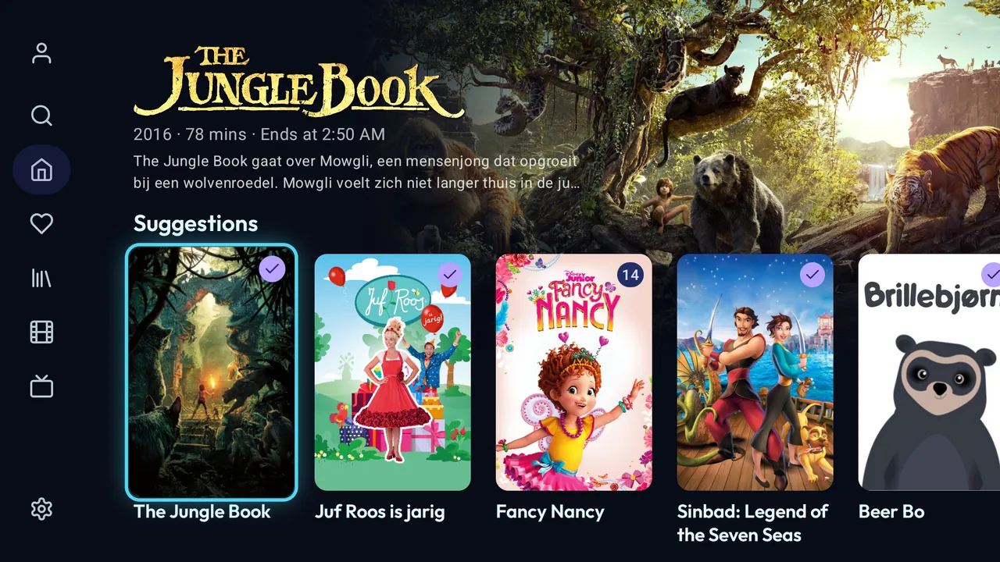
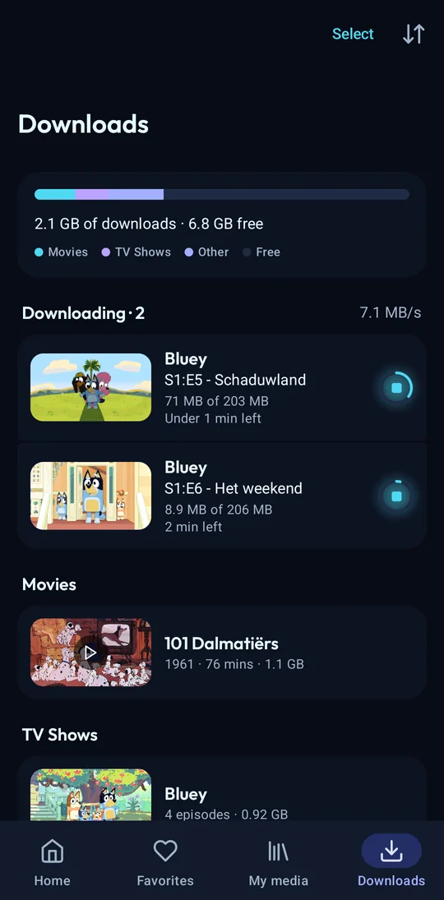
On the phone
Everything Findroid does, and these things on top. Findroid's own changes are merged in regularly.
Downloads
- Resumable, with SD card support. Built on OkHttp, not Android's DownloadManager.
- A quality per download: the original, or a server conversion from 4K down to 360p.
- Whole seasons or series at once, with a limit on concurrent downloads.
- A Downloads screen with progress per episode and per show, a storage breakdown, multi-select and undo.
- Smart Downloads (opt-in) keeps the next episodes of what you're watching and removes them once watched.
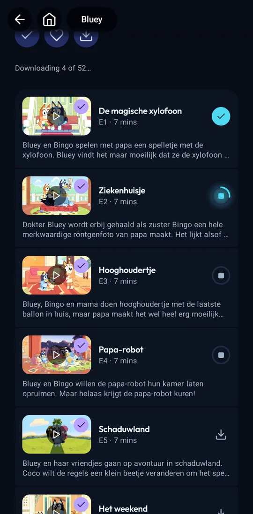
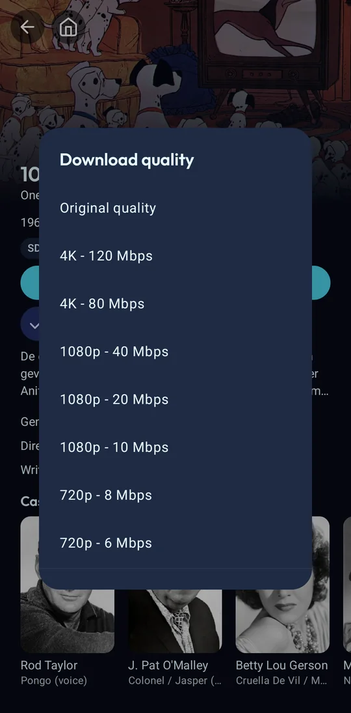
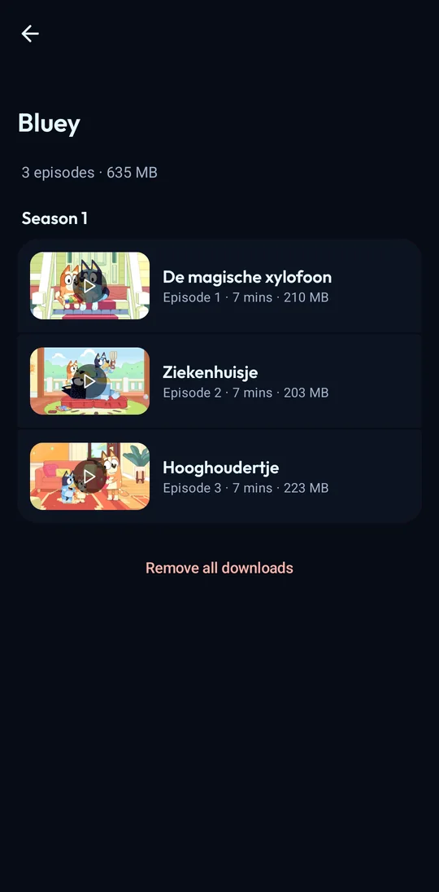
Playback
- Dolby Vision direct play where the device supports it, transcoding where it doesn't. Dolby Vision downloads can be converted to a device-compatible copy.
- Platform decoder first (Atmos), ffmpeg if a decoder fails.
- PGS, VobSub and DVB subtitles without transcoding. Subtitle colour, outline, font and size.
- Version picker before playing, quality switch during playback.
- Audio and subtitle choice remembered per series and per user.
- Plays on into the next season. Chapter list. Skip, ask or ignore per media segment type. "Still watching?" after a run of autoplayed episodes.
- Background audio with lock screen controls (opt-in).
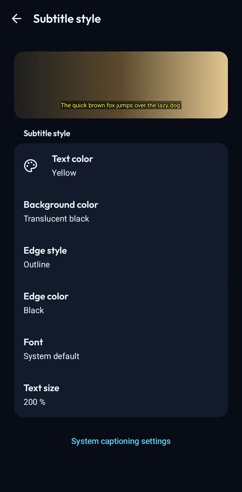
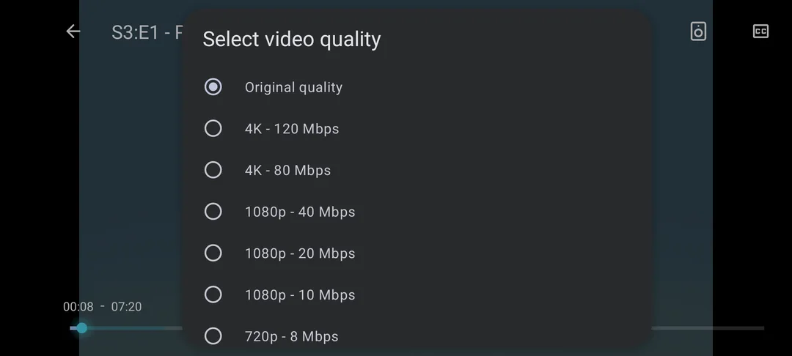
Library
- Favorites tab.
- Home rows you choose and reorder.
- Hide-watched filter, kept across libraries.
- Offline mode switches on by itself without a connection.
- Error screens with Retry, and real empty states.
- Long-press to copy text on detail screens. Option to hide cast and crew.
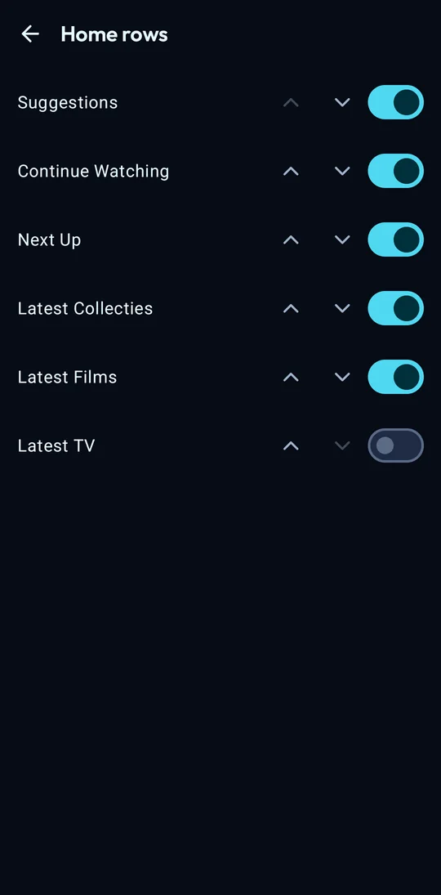
On Android TV
A separate app, built for the remote. Same login and server as the phone app, same releases.
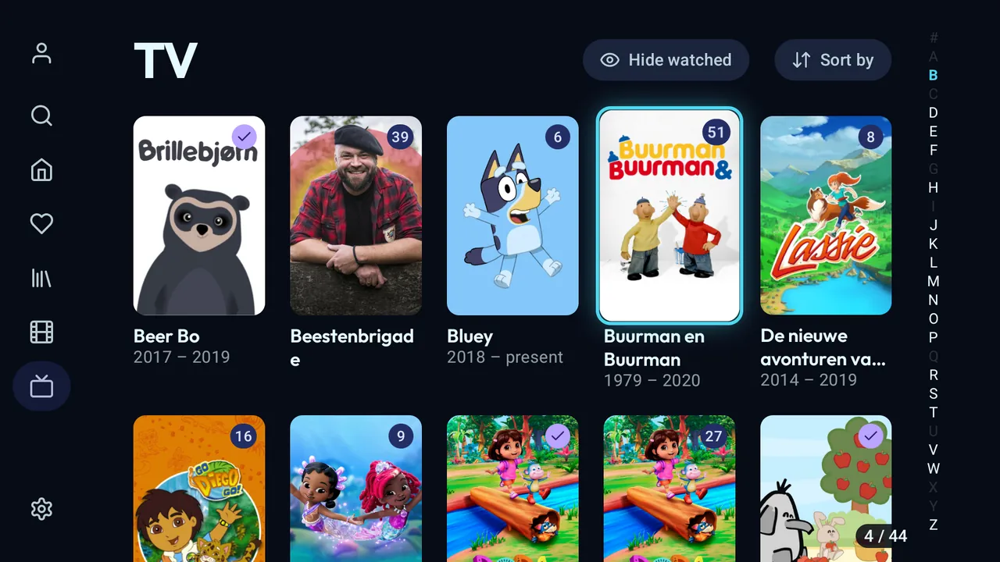
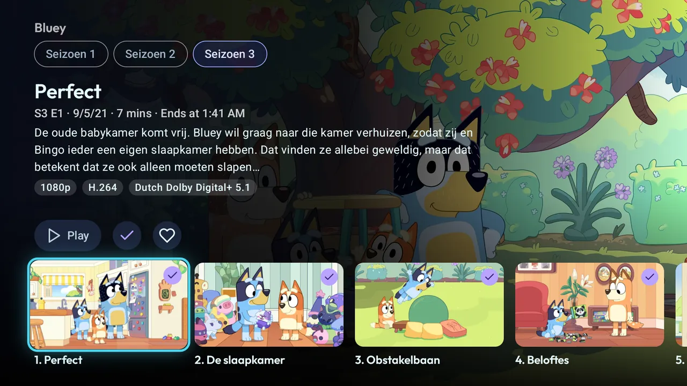
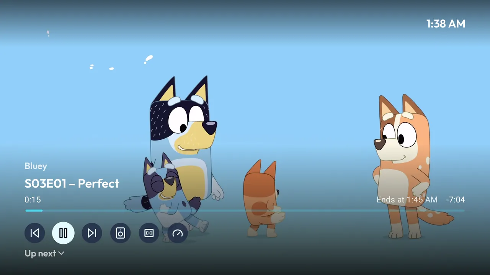
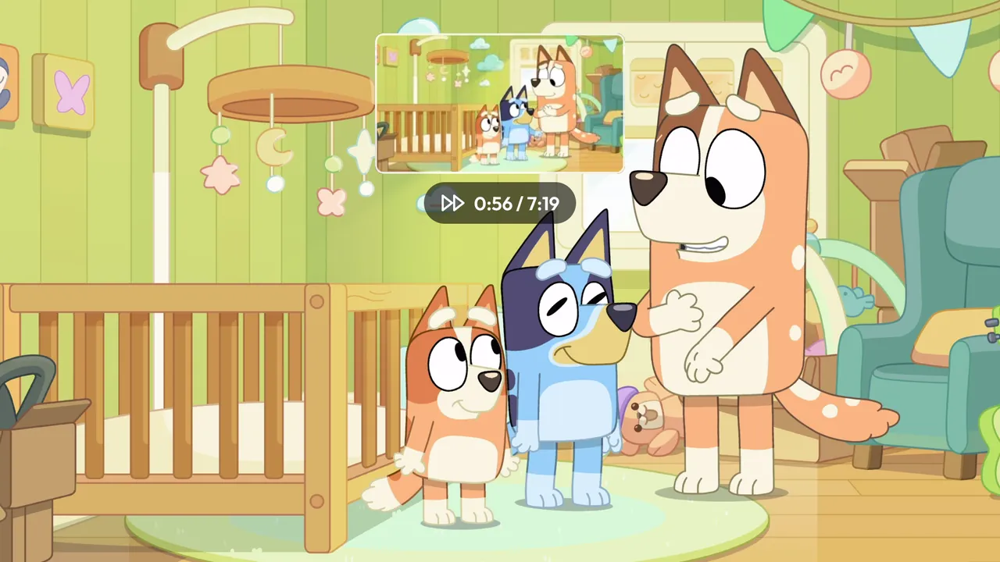
- Side drawer: Search, Home, Favorites, your libraries, Settings.
- Home with a hero for the focused item. Rows stay put; you choose and order them.
- Library grid with an A to Z jump bar, a counter and the hide-watched filter.
- Episodes open in their season, details first. Cast rows and person pages.
- Player: D-pad seeking, media keys, trickplay thumbnails, an overlay with the series, end time, previous, next and the queue.
- Refresh rate switching to match the video.
- Continue Watching and Next Up in the Android TV home screen's Watch Next row.
- Screensaver with your library's artwork. Optional theme music on show pages.
- Collections, trailers and settings all reachable with the remote.
Install
Phones and tablets use the -libre-<abi>.apk files, Android TV the -libre-tv-<abi>.apk files. Nearly everything is arm64-v8a; 32-bit TV boxes such as the Xiaomi Mi Box need armeabi-v7a.
Obtainium
Add https://github.com/midasvo/ephyra in Obtainium. Leave Include prereleases off and set Filter APKs by regular expression:
| Phone or tablet | -libre-arm64-v8a\.apk$ |
|---|---|
| Android TV, 64-bit | .*-tv-arm64-v8a\.apk |
| Android TV, 32-bit | .*-tv-armeabi-v7a\.apk |
Releases page
Download the APK from Releases on GitHub. Each release lists what changed; the full history is in the changelog.
Ephyra has its own application ID, so it installs next to Findroid. Coming from Findroid CE, the update installs over it and keeps your login, settings and downloads.
F-Droid
Submitted, waiting for review. The build is reproducible and verified against the GitHub APKs, so once listed you can switch sources without reinstalling.
Beta
Every push to main publishes a prerelease. It installs as a separate app, Ephyra Beta, with its own data. Untested; expect bugs.
In Obtainium, add the repository again with Include prereleases on, filter release titles by ^Beta and APKs by -beta\.\d+-libre-arm64-v8a\.apk$.